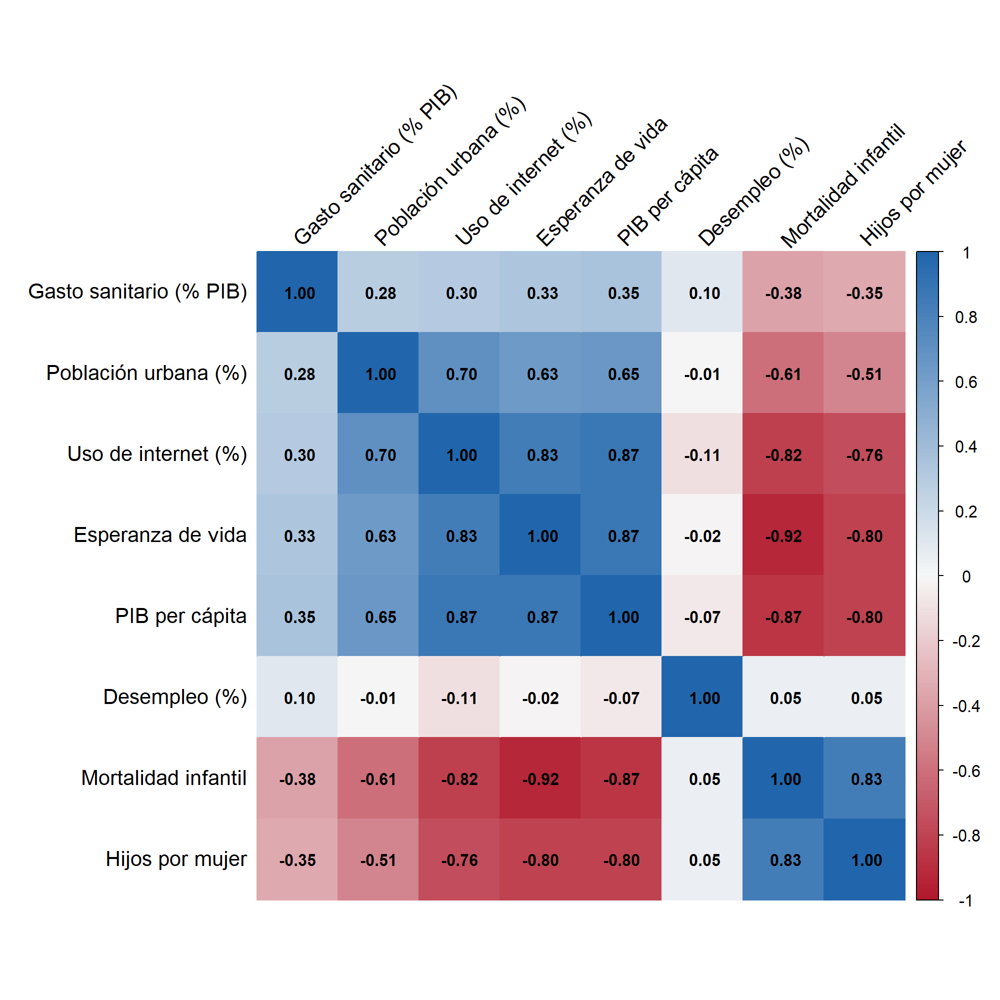

Correlación de Spearman entre 8 indicadores, 2023. Fuente: Banco Mundial, World Development Indicators. Las correlaciones están calculadas con datos de 214 países.
Una matriz de correlación es una técnica que nos permite analizar como se relacionan cada par de variables. Para medir esta relación se utiliza el coeficiente de correlación, el cual puede adoptar valores entre 1 y -1, siendo en 1 una relación fuerte directa (si una variable sube, la otra también) y -1 indica una relación fuerte inversa (si una sube, la otra baja). Si el coeficiente es 0, no hay relación lineal entre las variables. La matriz es simétrica y su diagonal vale 1 siempre porque toda variable se correlaciona directamente con ella misma. En las visualizaciones, podemos representar el valor de los coeficientes con una gama de colores para diferenciar los positivos de los negativos. Es una herramienta de análisis exploratorio, por lo tanto, la utilizaremos en ámbitos como las finanzas o la salud, entre otros. Por ejemplo, nos ayuda a eliminar variables redundantes en caso de estar desarrollando un proyecto de aprendizaje automático.
En este caso, utilizamos variables numéricas que deben estar emparejadas, es decir, para una misma observación tenemos valores en las variables a estudiar. Con esta herramienta no podemos usar variables categóricas y no es recomendado utilizar decenas de variables porque dificultamos su lectura.
Ventaja: podemos identificar que variables se mueven juntas de manera visual. Inconvenientes: los outliers pueden distorsionar la matriz de correlación, y, sobretodo, correlación no implica causalidad.